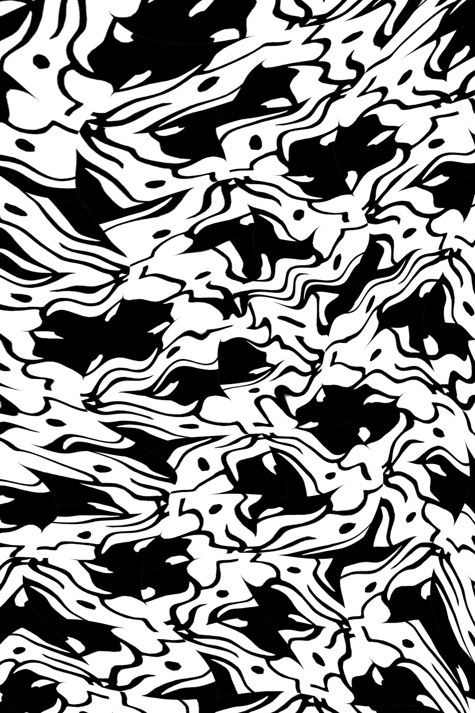

The first image is of a Nōtan, an artwork based of a reflection of light and dark shapes cut out from a square. In this piece, I wanted to use the set of rules enforced by a Nōtan in order to create the illusion of one creature out of two distinct organic sets of shapes. I was inspired by the impressive designs of Thai dragons and serpents from sculptures and artwork.
The second image is a tessellated pattern created from this Nōtan. The third image is a warping of that tessellation.
(photosensitivity warning for below GIF)

This is an animation assignment requiring the use of exclusively black and white. I wanted to use this limitation to its greatest benefit in this project, and planned the animation to take place in a pitch-black scene with passing lights serving to give context for what the subject is. I settled on an animation of a train passing by lampposts, which illuminate the edges of the train to hint at its shape.